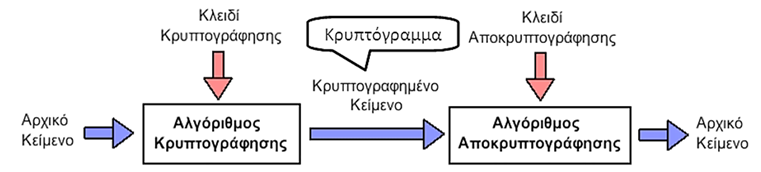

Networking — Πλήρης Οδηγός
1. Εισαγωγή — Βασικές Έννοιες
Ένα network είναι σύνολο υπολογιστικών συσκευών που επικοινωνούν. Κεντρικοί όροι: host, router, switch, link, segment, subnet. Η μελέτη περιλαμβάνει τοπολογίες, πρωτόκολλα (TCP/IP, UDP, ICMP), διευθυνσιοδότηση (IPv4/IPv6), και ασφάλεια (firewalls, VLANs, VPNs).
Τι είναι ένα Δίκτυο Υπολογιστών;
Με τον όρο δίκτυο υπολογιστών αναφερόμαστε σε ένα σύστημα επικοινωνίας, στο οποίο πραγματοποιείται ανταλλαγή δεδομένων μεταξύ πολλών (από δύο και πάνω) διασυνδεδεμένων αυτόνομων υπολογιστικών συσκευών.
Οι υπολογιστές θεωρούνται διασυνδεδεμένοι όταν είναι σε θέση να ανταλλάξουν πληροφορίες μεταξύ τους και αυτόνομοι όταν δεν είναι δυνατό κάποιος υπολογιστής να ελέγξει τη λειτουργία (π.χ. εκκίνηση ή τερματισμό) κάποιου άλλου. Με απλά λόγια ένα δίκτυο υπολογιστών μπορεί να είναι ένα σύνολο από δύο ή παραπάνω υπολογιστές που είναι διασυνδεδεμένοι μεταξύ τους με ένα ή παραπάνω φυσικά μέσα.
Οι υπολογιστές καλούνται κόμβοι (nodes) όπου:
- Κόμβος ενός δικτύου μπορεί να είναι κάθε είδους υπολογιστική συσκευή
- Κάθε κόμβος προσδιορίζεται από μια τουλάχιστον μοναδική διεύθυνση
Κάθε φυσικό μέσο καλείται ζεύξη, μέσο μετάδοσης ή κανάλι (π.χ. Οπτική ίνα, ομοαξονικό καλώδιο). Οι κόμβοι και οι ζεύξεις αποτελούν τους πόρους (resources) ενός δικτύου
Σκοπός των Δικτύων
Ο σκοπός για τον οποίον τα δίκτυα δημιουργήθηκαν είναι για να εξυπηρετήσουν τις ολοένα και αυξανόμενες ανάγκες που δημιουργήθηκαν από την ευρεία χρήση των υπολογιστών συσκευών. Ο κυριότερος όμως σκοπός για τον οποίο είναι σημαντική ύπαρξη των δικτύων είναι διότι με αυτά επιτυγχάνουμε, διαμερισμός των πόρων σε συστήματα καθώς και ανταλλαγή πληροφοριών (προγράμματα, αρχεία, δεδομένα).
Οι πόροι ενός συστήματος αποτελούνται από:
- Υλικό (hardware), π.χ. υπολογιστές, εκτυπωτές, plotters, σκληροί δίσκοι
- Είτε λογισμικό (software), π.χ. δεδομένα, προγράμματα εφαρμογών, υπηρεσίες
Τα προγράμματα, τα δεδομένα και οι συσκευές (σκληροί δίσκοι, εκτυπωτές, κλπ) είναι διαθέσιμα σε οποιονδήποτε είναι συνδεδεμένος στο δίκτυο, ανεξάρτητα από την θέση στην οποία βρίσκεται. Έτσι επιτυγχάνεται εξοικονόμηση χρημάτων, αύξηση της απόδοσης του συστήματος, κεντρικός έλεγχος και εύκολη επεκτασιμότητα. Σε ένα δίκτυο υπολογιστών μπορούμε να έχουμε ανταλλαγή δεδομένων, προγραμμάτων, χρήση κοινών βάσεων δεδομένων, αρχείων, αποστολή μηνυμάτων (electronic mail). Όμως, ανεξάρτητα απ’όλα αυτά ένα δίκτυο υπολογιστών αποτελεί ένα αρκετά ισχυρό μέσο επικοινωνίας μεταξύ ανθρώπων που βρίσκονται σε διαφορετικά ή διάσπαρτα σημεία.
Αρχιτεκτονική των Δικτύων
Με τον όρο αρχιτεκτονική ενός δικτύου αναφερόμαστε στον τρόπο με τον οποίο οι υπολογιστές και οι λοιπές συσκευές συνδέονται μεταξύ τους με άμεσο σκοπό την δυνατότητα διαμοιρασμού πληροφοριών και συσκευών που διαθέτει αυτό.
Ένα δίκτυο δεδομένων μπορεί να περιλαμβάνει τις εξής οντότητες:
- Τερματικούς Κόμβους: Όπου είναι σημεία τα οποία ελέγχουν τους πόρους του δικτύου (λογισμικό και υλικό).
- Υποδίκτυα: Φυσικά μέσα μετάδοσης, πρωτόκολλα επικοινωνίας, τοπολογία, τερματικοί κόμβοι, πόροι που μπορεί να διαφέρουν πολύ σε κάθε υποδίκτυο.
- Συσκευές Διασύνδεσης: Όπου διασυνδέουν ετερογενή υποδίκτυα με άμεσο σκοπό την εξασφάλιση επικοινωνίας των τερματικών κόμβων που βρίσκονται σε διαφορετικά υποδίκτυα
Τι είναι Node, Link, IEEE και UTP;
- Node: κάθε συσκευή (PC, router, printer, IoT) που συμμετέχει στο δίκτυο και έχει IP/MAC.
- Link: φυσική ή λογική σύνδεση μεταξύ δύο κόμβων (Ethernet, Wi-Fi, VPN tunnel).
- IEEE: οργανισμός που καθορίζει πρότυπα (802.3 = Ethernet, 802.11 = Wi-Fi, 802.1Q = VLANs).
- UTP (Unshielded Twisted Pair): το πιο κοινό καλώδιο Ethernet (Cat5e/Cat6). Τα στριμμένα ζεύγη μειώνουν παρεμβολές.
Δικτυακές συσκευές διαμεσολάβησης (Intermediary Network Devices)
Οι δικτυακές συσκευές διαμεσολάβησης αναλαμβάνουν τον ρόλο του «διαμεσολαβητή» σε ένα δίκτυο, δηλαδή είναι συσκευές που εξυπηρετούν όλες τις ανάγκες ώστε να γίνει εφικτή η μεταφορά δεδομένων. Τέτοιες συσκευές μπορεί να είναι οι δρομολογητές (routers), μεταγωγείς (switches) και εξειδικευμένες συσκευές όπως συσκευές τείχη προστασίας (firewalls) που θα τις αναλύσουμε παρακάτω.
- Δρομολογητές (routers): Οι δρομολογητές είναι ηλεκτρονικές συσκευές οι οποίες αναλαμβάνουν την αποστολή και λήψη πακέτων δεδομένων μεταξύ ενός ή περισσοτέρων εξυπηρετητών, άλλων δρομολογητών και πελατών, κατά μήκος πολλαπλών δικτύων. Η δρομολόγηση, δηλαδή η διαδικασία μεταφοράς δεδομένων από το ένα σημείο στο άλλο αποτελεί κεντρική λειτουργία του 3ου επιπέδου (επιπέδου δικτύου) και πραγματοποιείται με βάση διαφόρων κριτήριων (π.χ. καλύτερη δυνατή διαδρομή, χρονικά συντομότερη κλπ). Οι δρομολογητές μπορούν να αξιοποιήσουν ένα ή περισσότερα πρωτόκολλα δρομολόγησης με βάση των οποίων ο δρομολογητής καθορίζει ποια διαδρομή – ζεύξη είναι η καταλληλότερη κάθε χρονική στιγμή και δρομολογεί τα πακέτα δεδομένων προς αυτήν.
- Μεταγωγείς (switches): Ο μεταγωγέας (switch) είναι μια ηλεκτρονική συσκευή που χρησιμοποιείται σε δίκτυα υπολογιστών. Χρησιμοποιείται για την διασύνδεση δικτυακών τερματικών συσκευών (π.χ. υπολογιστές, εξυπηρετητές, εκτυπωτές κτλ) σε ένα δίκτυο δεδομένων. Οι περισσότερες σήμερα σχεδιάσεις τοπικών δικτύων γίνονται με δίκτυα τύπου Ethernet, τα βασικότερα εκ των οποίων αποτελούν οι μεταγωγείς Ethernet. Υπάρχουν δύο κατηγορίες μεταγωγών (switches):
- Μεταγωγέας επιπέδου ζεύξης (data link layer switch)
- Μεταγωγέας επιπέδου δικτύου (network layer switch) - Τείχος Προστασίας (Firewall): Το τείχος προστασίας (firewall) είναι ένα σύνολο από προγράμματα/φίλτρα, που έχουμε εγκαταστήσει σε πύλες (σημεία σύνδεσης) του εσωτερικού μας δικτύου με άλλα δίκτυα, π.χ. το Internet ή κάποιο άλλο δημόσιο δίκτυο, που δεν ελέγχονται από εμάς. Οι συσκευές που εγκαθίστανται τα προγράμματα/φίλτρα συνθέτουν ένα Firewall, είναι δρομολογητές και εξυπηρετητές ειδικοί για τον σκοπό αυτόν.
2. Είδη Δικτύων
Με βάση την γεωγραφική ανάπτυξη:
- Τοπικά δίκτυα (Local Area Networks – LAN): Εκτείνονται σε μια περιορισμένη γεωγραφική απόσταση (π.χ. κτήριο ή ένα συγκρότημα κτηρίων) και περιορίζεται στα πλαίσια ενός οργανισμού ή μιας εταιρίας. Χαρακτηρίζονται από υψηλούς ρυθμούς μεταφοράς δεδομένων (10 έως 100 Mbps), μικρή καθυστέρηση και αριθμό σφαλμάτων. Επίσης έχουν μικρό αριθμό διασυνδεδεμένων υπολογιστών και χρησιμοποιούν ιδιωτικά μέσα μετάδοσης. Τοπικά δίκτυα συναντάμε σε σχολεία, πανεπιστήμια, εταιρίες, οργανισμούς, ιδρύματα κλπ.
- Μητροπολιτικά Δίκτυα (Metropolitan Area Networks – MAN): Είναι δίκτυα τα οποία περιορίζονται στα πλαίσια μιας πόλης. Ένα μητροπολιτικό δίκτυο συνήθως συνδέει τα διάφορα τοπικά δίκτυα υπολογιστών χρησιμοποιώντας ένα δίκτυο κορμού (backbone technology) υψηλού εύρους ζώνης, όπως οι οπτικές ίνες και παρέχει διασυνδέσεις προς τα δίκτυα ευρείας περιοχής ή το διαδίκτυο.
- Δίκτυα ευρείας περιοχής (Wide Area Networks – WAN): Καλύπτουν αποστάσεις μερικών χιλιομέτρων (συνήθως άνω των 5 km) συνήθως μια εκτεταμένη γεωγραφική περιοχή (π.χ. χώρες, κράτη ακόμα και ηπείρους). Αποτελούνται από υπολογιστές, τηλεπικοινωνιακές συσκευές και γραμμές. Παραδείγματα τέτοιων δικτύων μπορεί να θεωρηθούν τα δίκτυα των αεροπορικών εταιρειών, τα τραπεζικά δίκτυα, τα δημόσια δίκτυα δεδομένων κλπ.
Όταν αναφερόμαστε για δίκτυα LAN, αναφερόμαστε σε δίκτυα τα οποία διαθέτουν:
- Έναν μικρό αριθμό υπολογιστών (π.χ. 10 διασυνδεδεμένους υπολογιστές),
- και έχουν περιορισμένη γεωγραφική έκταση (π.χ. 1000 μέτρα)
Ιδιωτικές IP διευθύνσεις: Είναι οι IP διευθύνσεις οι οποίες φαίνονται εντός ενός τοπικού δικτύου LAN. Δεν είναι ορατές στο διαδίκτυο.
Δημόσιες IP διευθύνσεις: Η δημόσια IP είναι ένας μοναδικός, παγκόσμιος αριθμός που χρησιμοποιείται για τη σύνδεση στο διαδίκτυο.
Μπορείτε να σκεφτείτε τη δημόσια IP σαν τη διεύθυνση του σπιτιού σας, η οποία είναι ορατή σε όλους, ενώ η ιδιωτική IP είναι ο αριθμός του δωματίου σας, ορατός μόνο στους ανθρώπους που βρίσκονται μέσα στο σπίτι.
Με βάση τον τηλεπικοινωνιακό φορέα εξυπηρέτησης:
- Ιδιωτικά δίκτυα (Private Networks): Είναι δίκτυα τα οποία αποτελούν ιδιοκτησία ενός ιδιωτικού οργανισμού ή μιας εταιρίας. Πρόσβαση σε αυτό το δίκτυο έχουν μόνο εξουσιοδοτημένοι χρήστες (υπάλληλοι, εργαζόμενοι κτλ) οι οποίοι συνήθως πρέπει να βρίσκονται φυσικά εντός των εγκαταστάσεων του οργανισμού για να αποκτούν πρόσβαση σε αυτό. Η πρόσβαση σε ιδιωτικό δίκτυο από σημεία εκτός του οργανισμού είναι περιορισμένος ή ακόμα και ανύπαρκτος.
- Δημόσια δίκτυα (Public Networks): Τα δημόσια δίκτυα είναι αυτά τα οποία μεταφέρουν τα δεδομένα πολλών χρηστών χωρίς ελέγχους ή διακρίσεις. Εξυπηρετούν υπηρεσίες πολλών ειδών και προσφέρουν την διασύνδεση μεταξύ χρηστών σε όλο τον κόσμο. Το βασικότερο δημόσιο δίκτυο είναι το Διαδίκτυο και λειτουργεί για τα δεδομένα με τον ίδιο τρόπο που λειτουργεί το Παγκόσμιο Δημόσιο Τηλεφωνικό Δίκτυο ή PSTN (Public Switched Telephone Network).
Τι είναι μια Mac address;
Μια Mac Address (Media Access Control Address) ή αλλιώς Διεύθυνση Πρόσβασης Υλικού είναι ένα αλφαριθμητικό αναγνωριστικό κάθε συσκευής που συνδέεται σε ένα δίκτυο. Σε αντίθεση με την IP Διεύθυνση που αφορά διεύθυνση λογισμικού και η οποία αλλάζει εύκολα, η MAC Διεύθυνση είναι μια διεύθυνση υλικού η οποία είναι μοναδική για κάθε συσκευή και δίνεται σε αυτήν κατά την κατασκευή της χωρίς να μπορεί να αλλαχτεί μετέπειτα.
Μια Διεύθυνση MAC έχει την παρακάτω μορφή:
00:30:BD:01:9D:45
Τα τρία πρώτα ζευγάρια της Διεύθυνσης MAC (00:30:BD) προσδιορίζουν τον κατασκευαστή της συσκευής δικτύου ενώ τα υπόλοιπα τρία ζευγάρια (01:9D:45) τον αριθμό της συσκευής.
Τι είναι μια IP address;
Μια Internet Protocol (IP) address είναι ένα μοναδικό αναγνωριστικό που δίνεται σε μια συσκευή συνδεδεμένη σε τοπικό δίκτυο ή στο διαδίκτυο. Μια διεύθυνση IP μπορεί να παρομοιαστεί με μια διεύθυνση σπιτιού, κάτι που είναι σημαντικό κατά την αποστολή αλληλογραφίας.
Ομοίως, μια IP address επιτρέπει σε διαφορετικές συσκευές που είναι συνδεδεμένες σε ένα δίκτυο να επικοινωνούν. Είναι η διεύθυνση από την οποία ο υπολογιστής σας στέλνει και λαμβάνει δεδομένα.
Για παράδειγμα, εάν θέλετε να στείλετε δεδομένα σε έναν συγκεκριμένο υπολογιστή στο διαδίκτυο, ένας server (δρομολογητής) θα τα δρομολογήσει σε αυτόν τον υπολογιστή λόγω της μοναδικής του ταυτότητας (διεύθυνση IP). Το ίδιο ισχύει και για τους ιστότοπους. Κάθε ιστότοπος έχει μια μοναδική διεύθυνση IP.
Υπάρχουν δύο εκδόσεις διευθύνσεων IP, η IPv4 και η IPv6. Το IPv4 περιλαμβάνει ένα σύνολο τεσσάρων αριθμών που χωρίζονται με τελείες που κυμαίνονται από το 0 έως το 255. Ακολουθεί ένα δείγμα διεύθυνσης IPv4: 207.228.238.7.
Διαφορές μεταξύ MAC address και IP address
Τώρα που καταλαβαίνετε τι είναι οι IP address και οι MAC address, ας δούμε πώς διαφέρουν μεταξύ τους:
- Πρώτον, ένας πάροχος υπηρεσιών Διαδικτύου (ISP) παρέχει μια διεύθυνση IP, ενώ ένας κατασκευαστής καρτών δικτύου εκχωρεί μια διεύθυνση MAC.
- Μια διεύθυνση IP είναι μια λογική διεύθυνση 32-bit (IPv4) ή 128-bit (IPv6), ενώ μια διεύθυνση MAC είναι μια φυσική διεύθυνση 48-bit.
- Οι διευθύνσεις MAC λειτουργούν στο επίπεδο σύνδεσης δεδομένων του μοντέλου Open Systems Interconnection (OSI), ενώ οι διευθύνσεις IP λειτουργούν στο επίπεδο δικτύου.
- Μια άλλη διαφορά μεταξύ μιας διεύθυνσης MAC και μιας διεύθυνσης IP είναι ότι η τελευταία είναι προσωρινή ενώ η πρώτη είναι μόνιμη (Μπορείτε να την αλλάξετε, αλλά κάντε το με προσοχή).
- Επίσης, δύο ή περισσότερες συσκευές δεν μπορούν να μοιράζονται την ίδια διεύθυνση MAC, ενώ πολλές συσκευές μπορούν να μοιράζονται μια ενιαία διεύθυνση IP.
- Το βασικό στοιχείο είναι ότι μια διεύθυνση IP προσδιορίζει μια σύνδεση με το δίκτυο, ενώ μια διεύθυνση MAC προσδιορίζει μια φυσική συσκευή συνδεδεμένη στο δίκτυο.
3. Network Topologies (τοπολογίες)
Οι τοπολογίες περιγράφουν πώς συνδέονται οι συσκευές — επηρεάζουν redundancy, latency, και κόστος.
- Αρτηρίας ή διαύλου (Bus): Όπου οι σταθμοί εργασίας συνδέονται σε ένα κοινό διαμοιραζόμενο επικοινωνιακό φυσικό μέσο. (shared medium — collisions, παλαιότερη τεχνολογία)
- Δακτυλίου (Ring): Όπου στην τοπολογία αυτή υπάρχει κλειστή διαδρομή του φυσικού μέσου και οι σταθμοί εργασίας συνδέονται κανονικά. (token-based — deterministic latency)
- Αστέρα (Star): Όπου οι σταθμοί εργασίας συνδέονται με μητρική μονάδα εξυπηρέτησης. (κεντρικός switch/router — εύκολη διαχείριση, single point of failure χωρίς redundancy)
- Δέντρου (Tree): Η τοπολογία δέντρου είναι συνδυασμός των τοπολογιών αστέρα και διαύλου. Το δίκτυο έχει έναν κεντρικό κόμβο όπου πάνω σε αυτόν συνδέονται με τοπολογία αρτηρίας.
- Δικτυωτή (Mesh): Όπου κάθε υπολογιστική συσκευή ή/και συσκευή δικτύου είναι διασυνδεδεμένες μεταξύ τους με μια άλλη αντίστοιχα. Αυτό επιτρέπει την δυνατότητα να διανεμηθούν περισσότερες μεταδόσεις ακόμη και σε περίπτωση που μία από τις συνδέσεις δεν λειτουργεί. Αυτή η τοπολογία δεν είθισται να χρησιμοποιείται για διασύνδεση υπολογιστών καθότι είναι πολύ δύσκολο αλλά και πολύ δαπανηρό να υπάρχουν περιττές συνδέσεις σε κάθε υπολογιστή. (υψηλή redundancy π.χ. backbone ISPs)
4. OSI vs TCP/IP Model — Mnemonic

Θυμήσου: “Please Do Not Throw Sausage Pizza Away” → Physical, Data, Network, Transport, Session, Presentation, Application.
| Layer | Όνομα | Παραδείγματα |
|---|---|---|
| 7 | Application | HTTP, FTP, DNS |
| 6 | Presentation | TLS, SSL, ASCII |
| 5 | Session | RPC, NetBIOS |
| 4 | Transport | TCP, UDP |
| 3 | Network | IP, ICMP, ARP |
| 2 | Data Link | Ethernet, VLANs |
| 1 | Physical | Cables, Hubs, RF |
Συμπέρασμα για το TCP/IP
Η επικράτηση του TCP/IP οφείλεται στους παρακάτω λόγους:
- Είναι διαθέσιμο και ανοικτό σε όλους
- Υπήρχε ανάγκη για ένα κοινό πρότυπο επικοινωνίας
Το πρωτόκολλο TCP/IP έχει σήμερα καθολική αποδοχή. Πριν το TCP/IP συσκευές διαφορετικών κατασκευαστών ή με διαφορετικά λειτουργικά δεν μπορούσαν να επικοινωνήσουν μεταξύ τους. Τουλάχιστον με εύκολο τρόπο.
Μειονεκτήματα του TCP/IP
Παρόλο που το TCP/IP έχει επικρατήσει πλήρως στον τομέα των δικτύων αρχίζει σταδιακά να μην ανταποκρίνεται στις σημερινές προσδοκίες. Τα μειονεκτήματα του TCP/IP είναι τα εξής:
- Το πρώτο και σημαντικότερο μειονέκτημα είναι η απ’ άκρο σε άκρο επικοινωνία
- Το δεύτερο μειονέκτημα είναι ότι βασίζεται σε μια αρχιτεκτονική πελάτη – εξυπηρετητή
- Δεν έχουμε multicasting
Τι είναι το πρωτόκολλο TCP
Το τρίτο (δικτύου) και το τέταρτο (μεταφοράς) επίπεδο του OSI αντιπροσωπεύουν την διεπαφή μεταξύ δικτυακών λογισμικών (εφαρμογές που χρειάζονται να μεταφέρουν δεδομένα σε ένα δίκτυο) και του δικτυακού υλικού (οι συσκευές που μεταφέρουν δεδομένα πάνω σε ένα δίκτυο υπολογιστών). Μια σουίτα πρωτοκόλλου (protocol suite) πρέπει να διαθέτει κάποιο πρωτόκολλο (ή σύνολο πρωτοκόλλων) το οποίο να διαχειρίζεται τις λειτουργίες των επιπέδων 3 και 4. Η ονομασία του μοντέλου αναφοράς TCP/IP προκύπτει από τα δύο κύρια πρωτόκολλά τα οποία παρέχουν τις παραπάνω δυνατότητες, επιτρέποντας ένα λογισμικό να “τρέχει” πάνω από ένα εσωτερικό δίκτυο. Το επίπεδο δικτύου (IP) διαχειρίζεται τα πακέτα (datagrams) ενός εσωτερικού δικτύου όσον αφορά την παράδοση και δρομολόγηση αυτών προς τον τελικό προορισμό ενώ το επίπεδο μεταφοράς (TCP) διαχειρίζεται τις συνδέσεις και παρέχει αξιοπιστία.
Το πρωτόκολλο μεταφοράς TCP
To Πρωτόκολλο Ελέγχου Μεταφοράς (Transmission Control Protocol – TCP) είναι ένα πρωτόκολλο προσανατολισμένης σύνδεσης (connection-oriented protocol) το οποίο βρίσκεται στο επίπεδο μεταφοράς του μοντέλου επικοινωνίας TCP/IP. Εγκαθιδρύει μια σύνδεση μεταξύ για μεταφορά δεδομένων μεταξύ δύο οντοτήτων (client και server). Η εικόνα παρακάτω δείνει ενα παράδειγμα εκκίνησης TCP σύνδεσης.
Το πρωτόκολλο μεταφοράς UDP
Το πρωτόκολλο Αυτοδύναμων Πακέτων Χρήστη (User Datagram Protocol – UDP) είναι ένα ασυνδεσμικό πρωτόκολλο επικοινωνίας (connectionless protocol) και βρίσκεται στο επίπεδο μεταφοράς του πρότυπου επικοινωνίας TCP/IP. Δεν απαιτεί εγκαθύδρυση επικοινωνίας ούτε ελέγχει αν ο παραλήπτης έλαβε τα δεδομένα ή όχι, απλά στέλνει τα δεδομένα όσο πιο γρήγορα γίνεται. Το UDP χρησιμοποιείται για εφαρμογές που απαιτούν γρήγορη ταχύτητα όπως σε τηλεδιασκέψεις, σε video streaming π.χ. Youtube, για audio streaming π.χ. Soundcloud κλπ.
Διαφορές και ομοιότητες του TCP και UDP
Υπάρχουν κάποιες βασικές ομοιότητες και διαφορές μεταξύ του TCP και του UDP. Μια απο αυτές τις διαφορές είναι ότι το TCP είναι ένα πρωτόκολλο μεταφοράς προσανατολισμένης σύνδεσης καθότι εγκαθιδρύει μια απ’ άκρο σε άκρο επικοινωνία (end-to-end connection) μεταξύ ενός πελάτη (client) κι ενός εξυπηρετητή (server) πρωτού ξεκινήσει η μεταφορά δεδομένων. Απο την αλλη μεριά το UDP είναι ένα ασυνδεσμικό (connection-less) πρωτόκολλο επικοινωνίας καθότι δεν καθορίζεται τίποτα στην σύνδεση και τα δεδομένα μεταφέρονται κατευθείαν. Η βασική δε ομοιότητα των δύο αυτών πρωτοκόλλων μεταφοράς είναι ότι και τα δύο βρίσκονται στο επίπεδο μεταφοράς του πρότυπου επικοινωνίας TCP/IP.
Μοντέλο πελάτη – εξυπηρετητή (client – server)
Ένα πολύ σημαντικό χαρακτηριστικό του πρότυπου επικοινωνίας TCP/IP είναι η προσανατολισμένη επικοινωνία. Δηλαδή κάθε επικοινωνία στο πρότυπο επικοινωνίας TCP/IP αφορά ανταλλαγή δεδομένων μεταξύ ενός υπολογιστή – πελάτη (client) όπου ζητάει μια υπηρεσία και έναν εξυπηρετητή (server) ο οποίος παρέχει αυτές τις εν λόγω υπηρεσίες. Θα πρέπει όμως να σημειώσουμε ότι ένας και μόνο ένας εξυπηρετητής δεν είναι ικανός να ικανοποιήσει όλα τα αιτήματα από τους πελάτες του. Γι’ αυτόν τον λόγο χρησιμοποιείται ένα σύμπλεγμα υπολογιστών που ονομάζεται κέντρο δεδομένων (data center) το οποίο φιλοξενεί έναν μεγάλο αριθμό υπολογιστών, για να δημιουργήσει έναν ισχυρό εικονικό εξυπηρετητή (server). Η παρακάτω εικόνα αποτυπώνει τον τρόπο με τον οποίο λειτουργεί το μοντέλο πελάτη – εξυπηρετητή (client – server).
Αρχιτεκτονική ομότιμων συστημάτων (Peer-to-Peer)
Όπως αναφέραμε παραπάνω στην κλασσική αρχιτεκτονική πελάτη – εξυπηρετητή έχουμε διάφορους κόμβους οι οποίοι ζητάνε μια πληροφορία από έναν εξυπηρετητή υπηρεσιών (dedicated server). Όμως στην αρχιτεκτονική peer-to-peer δεν υπάρχει κάποιος εξυπηρετητής υπηρεσιών (dedicated server) και κάθε κόμβος μπορεί να αναλάβει είτε τον ρόλο του πελάτη (client) είτε τον ρόλο του εξυπηρετητή (server). Δηλαδή στην αρχιτεκτονική peer-to-peer ένα σύνολο απο διάφορους κόμβους συνδέονται μεταξύ τους (μέσω κάποιου προγράμματος όπως το BitTorrent, qbittorent κλπ) χρησιμοποιώντας το διαδίκτυο (internet), έτσι ώστε να μπορέσουν να διαμοιρασουν μεταξύ τους δεδομένα (π.χ. διάφορα αρχεία ήχου, video κλπ). Η αρχιτεκτονική πελάτη – εξυπηρετητή (client – server) είναι ιδανική για μικρά δίκτυα όπου δεν χρειάζεται η ανάγκη χρήσης κάποιου εξυπηρετητή υπηρεσιών (dedicated server) όπως για παράδειγμα σε οικιακά δίκτυα ή σε ένα δίκτυο μιας μικρής επιχείρησης. Η Microsoft αναφέρει την αρχιτεκτονική πελάτη – εξυπηρετητή με τον όρο workgroup.
Named Data Networking – NDN
H επιστημονική κοινότητα που ασχολείται με το κομμάτι των δικτύων αποφάσισαν ότι πρέπει να δημιουργηθεί ένα νέο μοντέλο επικοινωνίας που να μην βασίζεται στην απ’ άκρο σε άκρο επικοινωνία. Οπότε λοιπόν γι’ αυτόν τον λόγο γίνονται προσπάθειες για να υλοποιηθεί το μοντέλο επικοινωνίας NDN. To Named Data Networking – NDN βασίζεται στην εξής προσέγγιση:
- Ότι τα NDN πακέτα δεν περιέχουν IP διεύθυνση πηγής και προορισμού όπως στο TCP/IP
- Υπάρχει ένα NDN πακέτο ενδιαφέροντος (NDN interest packet) και ένα πακέτο δεδομένων NDN (Data packet NDN)
- Με απλά λόγια τα NDN πακέτα ρωτάνε «τι» και όχι «που».
5. Πρωτόκολλα — TCP, UDP, ICMP, ARP, DNS
TCP: connection-oriented, αξιόπιστο, με έλεγχο ροής (ACK, SYN, FIN, RST). UDP: connectionless, ταχύ, χωρίς επιβεβαίωση. Ιδανικό για DNS queries, streaming, VoIP. ICMP: χρησιμοποιείται για ping/traceroute. ARP: μετατρέπει IP σε MAC. DNS: μεταφράζει ονόματα σε IP (UDP 53 / TCP 53 για zone transfers).
Πίνακας Βασικών Port Numbers
| Υπηρεσία | Port | Πρωτόκολλο |
|---|---|---|
| HTTP | 80 | TCP |
| HTTPS | 443 | TCP |
| DNS | 53 | UDP/TCP |
| SSH | 22 | TCP |
| SMTP | 25 | TCP |
| FTP | 21 | TCP |
| RDP | 3389 | TCP |
Τι είναι το DNS;
Επειδή οι IP διευθύνσεις είναι δύσκολο να αποτυπωθούν στο μυαλό μας υπήρχε η ανάγκη επίλυσης αυτού του προβλήματος. Φανταστείτε να θέλαμε να μπούμε σε μια συγκεκριμένη ιστοσελίδα και να πρέπει να θυμόμασταν μια IP διεύθυνση (π.χ. 140.15.89.8) θα ήταν κάτι πολύ κουραστικό καθότι υπάρχουν πολλές ιστοσελίδες στο διαδίκτυο όπου κάθε μια έχει την δική της IP διεύθυνση. Γι’ αυτούς τους λόγους αναπτύχθηκε το σύστημα ονοματοδοσίας περιοχών (Domain Name System – DNS) το οποίο αναλαμβάνει την διαδικασία αντιστοίχισης μιας IP διεύθυνσης σε ένα όνομα (domain) που είναι μοναδικό. Το σύστημα ονομασίας περιοχών χρησιμοποιεί ιεραρχική αρχιτεκτονική. Δηλαδή οργανώνει τα ονόματα σε ιεραρχίες παρόμοιες με τις δομές καταλόγων σε ένα σύστημα αρχείων υπολογιστών. Τα ονόματα περιοχών συνήθως περιγράφουν οργανωτικές ή γεωγραφικές οντότητες. Δηλώνουν την χώρα που είναι συνδεδεμένο το δίκτυο, σε τι είδους οργανισμό ανήκει και σε μερικές περιπτώσεις τα ονόματα ορίζονται με ακόμη μεγαλύτερη λεπτομέρεια. Ένα όνομα περιοχής αποτελείται από λέξεις που χωρίζονται μεταξύ τους με τελείες. Το πλήθος των λέξεων μπορεί να ποικίλει. Συνήθως συναντάμε ονόματα με τρείς έως και πέντε λέξεις. Το πρώτο επίπεδο περιοχών ονομάζονται βασικές περιοχές και βρίσκονται στα δεξιά του ονόματος. Στις Η.Π.Α. υπάρχουν επτά τέτοιες περιοχές, στις οποίες κατατάσσονται τα δίκτυα ανάλογα με τις δραστηριότητες τους.
Αυτές είναι οι εξής:
- .arpa: Ειδικοί οργανισμοί διαδικτύου
- .edu: Εκπαιδευτικά ιδρύματα
- .com: Εμπορικές επιχειρήσεις
- .gov: Κρατικοί οργανισμοί
- .mil: Στρατιωτικοί οργανισμοί
- .net: Οργανισμοί διαχείρισης δικτύων
- .org: Οργανισμοί που δεν εντάσσονται στις παραπάνω κατηγορίες
| Εξήγηση | |
| Internationalized Domain Name – IDN | Αποτελεί ένα internet domain name το οποίο περιέχει ένα τουλάχιστον domain όνομα το οποίο αποτελείται από μη Αγγλικούς χαρακτήρες (π.χ. http://faß.de) |
| Domain Name System Security Extensions – DNSSEC | Αποτελεί ένα σύνολο από DNS επεκτάσεις όπου επιτρέπει στους DNS πελάτες (clients) την δυνατότητα ταυτοποίησης προέλευσης δεδομένων (data origin authentication). Είναι μια ιδιότητα κατά την οποία ο παραλήπτης μπορεί να επιβεβαιώσει την προέλευση του μηνύματος. |
| second-level domain – SLDC | Είναι ένα domain το οποίο είναι ένα βήμα πιο κάτω από ένα top-level domain. Για παράδειγμα έστω το example.com Το example είναι το δεύτερο όνομα top-level από το .com top level domain |
| IPV6 | Το συγκεκριμένο domain υποστηρίζει IPv.6 πρόσβαση |
Είδη DNS servers
Εξυπηρετητές Root DNS (Root name servers): Στο διαδίκτυο υπάρχουν 13 root DNS servers παγκοσμίως οι περισσότεροι εκ των οποίων βρίσκονται στην Βόρεια Αμερική. Σε αυτούς απευθύνονται οι τοπικοί (local) name servers που δεν μπορούν να μεταφράσουν ένα hostname.
Οι DNS root servers είναι οι εξής:
Εξυπηρετητές ονομάτων τομέα ανώτατου επιπέδου (Top-level domain – TLD Servers)
Αυθεντικοί εξυπηρετητές ονομάτων (Authoritative DNS servers)
Τοπικός εξυπηρετητής (Local DNS Server)
Τι είναι το πρωτόκολλο FTP
Το πρωτόκολλο μεταφοράς αρχείων (File Transfer Protocol – FTP) ορίζει τους κανόνες για την μεταφορά αρχείων. Για παράδειγμα σε μια τυπική σύνοδο FTP ο χρήστης έχει έναν τοπικό υπολογιστή που θέλει να μεταφέρει αρχεία προς έναν απομακρυσμένο εξυπηρετητή (server). Για να μπορέσει ο χρήστης να αποκτήσει πρόσβαση σε έναν απομακρυσμένο λογαριασμό, πρέπει να δώσει όνομα χρήστη (username) και ένα συνθηματικό (password). Αφού ο χρήστης δώσει αυτές τις πληροφορίες εξουσιοδότησης, μπορεί να μεταφέρει αρχεία απ’ το τοπικό του σύστημα αρχείων (δηλαδή τον τοπικό υπολογιστή του) προς το απομακρυσμένο σύστημα αρχείων (δηλαδή έναν server) και το ανάστροφο. Το πρωτόκολλο HTTP έχει πολλά κοινά χαρακτηριστικά. Ένα από αυτά τα κοινά χαρακτηριστικά είναι ότι και το FTP εκτελείται πάνω στο πρωτόκολλο μεταφοράς TCP. Το FTP χρησιμοποιεί τις TCP θύρες επικοινωνίας 20 για σύνδεση δεδομένων και την 21 για σύνδεση ελέγχου. Η εικόνα της παρακάτω διαφάνειας δίνει ένα πιο σαφές παράδειγμα των TCP θυρών επικοινωνίας που χρησιμοποιεί το FTP.
Τι είναι το πρωτόκολλο TFTP
Το πρωτόκολλο Trivial File Transfer Protocol (TFTP) είναι ένα πολύ απλό πρωτόκολλο για την μεταφορά αρχείων μέσω του Διαδικτύου (Internet). Εμφανίστηκε για πρώτη φορά το 1980 και παρέχει μερικές μόνο από τις λειτουργίες που διαθέτει το πρωτόκολλο FTP. Δεδομένου ότι είναι τόσο απλό, η ποσότητα μνήμης που χρειάζεται για να λειτουργήσει είναι σχετικά μικρή, πράγμα πολύ σημαντικό την εποχή που εμφανίστηκε διότι η μνήμη υπολογιστών ήταν ιδιαιτέρως περιορισμένη. Το TFTP χρησιμοποιήθηκε κυρίως για την έναρξη (booting) διαφόρων δρομολογητών (routers) οι οποίοι δεν είχαν σκληρούς δίσκους ή δισκέτες για να αποθηκεύσουν το λειτουργικό σύστημα. Σήμερα χρησιμοποιείται για την μεταφορά μικρών αρχείων μεταξύ των υπολογιστών ενός δικτύου. Το TFTP βασίζεται κυρίως σε ένα προγενέστερο πρωτόκολλο, το EFTP. Λόγω της απλότητάς του, το TFTP ήταν ένα από τα πρώτα πρωτόκολα της σουίτας πρωτοκόλλων TCP/IP που υλοποιήθηκε. Στην αρχική έκδοση του πρωτοκόλλου υπήρχε ένα αρκετά σημαντικό λάθος, το οποίο ανακαλύφθηκε σύντομα και ονομάστηκε orcerer’s Apprentice Syndrome. Διάφορα worms, όπως για παράδειγμα το Blaster, χρησιμοποιούν το TFTP για να μεταδοθούν και να μολύνουν νέους υπολογιστές.
Τι είναι το πρωτόκολλο HTTP
Το πρωτόκολλο μεταφοράς υπερκειμένου (HyperText Transfer Protocol – HTTP) βασίζεται στο μοντέλο πελάτη – εξυπηρετητή (client – server). Δηλαδή χωρίζεται σε δύο προγράμματα, που το ένα είναι του πελάτη (client) και το άλλο είναι του εξυπηρετητή (server). Τα δύο αυτά προγράμματα συνομιλούν μεταξύ τους ανταλλάσσοντας HTTP μηνύματα. Το HTTP ορίζει την δομή που θα έχουν αυτά τα μηνύματα. Οι περιηγητές (browsers) που «τρέχουν» σε έναν σταθμό εργασίας αναλαμβάνουν την δουλειά του HTTP πελάτη και την δουλειά του HTTP εξυπηρετητή αναλαμβάνει κάποιος απομακρυσμένος server στον οποίο ζητά πρόσβαση ο HTTP πελάτης. Συνήθως οι HTTP πελάτες που τρέχουν περιηγητές (browsers) είναι απλοί υπολογιστές οι οποίοι είτε βρίσκονται σε κάποια κατοικία είτε σε κάποιον οργανισμό (π.χ. εταιρίες, πανεπιστήμια, ιδρύματα έρευνας όπως το ΙΤΕ κλπ). Οι δε HTTP εξυπηρετητές όπως προαναφέραμε είναι απομακρυσμένοι servers οι οποίοι μπορεί να βρίσκονται σε κέντρα πληροφοριών (data centers) όπου φιλοξενούν αντικείμενα τα οποία μπορεί να ζητήσει ένας HTTP πελάτης.
Για παράδειγμα όταν ένας χρήστης ζητάει μια ιστοσελίδα πληκτρολογεί το αντίστοιχο σύνδεσμο (URL). Ο browser στέλνει ένα μήνυμα HTTP αίτησης για το αντικείμενο που έχει ο εξυπηρετητής. Ο εξυπηρετητής λαμβάνει αυτήν την αίτηση και απαντά με HTTP μηνύματα απόκρισης τα οποία περιέχουν τα αντικείμενα. Το HTTP χρησιμοποιεί το πρωτόκολλο TCP και την θύρα επικοινωνίας 80. Υπάρχει επίσης και το HTTPS το οποίο προσφέρει ασφαλής επικοινωνία μεταξύ client και server χρησιμοποιώντας την θύρα 443.
- GET: Η τιμή GET χρησιμοποιείται όταν θέλουμε να ανακτήσουμε μια πληροφορία που περιέχεται στο πεδίο URL (που είναι ένας server). Οι αιτήσεις που έχουν την τιμή GET μπορούν μόνο να ανακτήσουν δεδομένα.
- HEAD: Λειτουργεί με τον ίδιο τρόπο όπως η GET, με την διαφορά ότι μεταφέρει μόνο την γραμμή κατάστασης status line και την γραμμή επικεφαλίδας (header section) στο πακέτο HTTP.
- POST: Η τιμή POST χρησιμοποιείται σε HTTP μηνύματα αίτησης για να στείλουμε πληροφορία στον server, για παράδειγμα, τις πληροφορίες που θέλει να στείλει ένας πελάτης, ανέβασμα αρχείων, κλπ μέσω μιας φόρμας HTML.
- PUT: Αντικαθιστά όλες τις τρέχουσες αναπαραστάσεις των πόρων προορισμού με το ανεβασμένο περιεχόμενο (uploaded content)
- DELETE: Διαγράφει όλες τις τρέχουσες αναπαραστάσεις των πόρων προορισμού που έχουν δοθεί από ένα URL.
- CONNECT: Εγκαθιδρύει ένα επικοινωνιακό κανάλι με τον εξυπηρετητή (server) το οποίο ταχτοποιείται από το δοθέν URL
- OPTIONS: Περιγράφει όλες τις ιδιότητες επικοινωνίας για τους πόρους προορισμού
- TRACE: Εκτελεί μια διαδικασία από τεστ βρόγχων επαναληπτικών μηνυμάτων (message loop-back test) σε όλη τη σύνδεση ως τους πόρους προορισμού.
Τι είναι το πρωτόκολλο HTTPS
Το HTTPS δεν αποτελεί ένα ξεχωριστό πρωτόκολλο αλλά έναν συνδυασμό του πρωτοκόλλου HTTP και των δυνατοτήτων κρυπτογράφησης που παρέχει το πρωτόκολλο Secure Sockets Layer (SSL).
Η κρυπτογράφηση που χρησιμοποιείται εξασφαλίζει ότι τα κρυπτογραφημένα δεδομένα δεν θα υποκλαπούν από άλλους κακόβουλους χρήστες. Για να χρησιμοποιηθεί το HTTPS σε κάποιο server θα πρέπει ο διαχειριστής του να δημιουργήσει ένα ζεύγος κλειδιών (δημόσιο/ιδιωτικόο). Στην συνέχεια το δημόσιο κλειδί θα πρέπει να υπογραφεί από μία αρχή πιστοποίησης (certificate authority), η οποία εκδίδει ένα ψηφιακό πιστοποιητικό και η οποία πιστοποιεί ότι ο server που εμφανίζεται στο πιστοποιητικό είναι νόμιμος και ότι το πιστοποιητικό είναι έγκυρο.
Με τον τρόπο αυτό οι χρήστες μπορούν να δουν την υπογραφή της αρχής πιστοποίησης και να βεβαιωθούν ότι το πιστοποιητικό είναι έγκυρο και ότι κανένας κακόβουλος χρήστης δεν το έχει πλαστογραφήσει. Το HTTPS χρησιμοποιείται κυρίως όταν απαιτείται μεταφορά ευαίσθητων προσωπικών δεδομένων (π.χ. υπηρεσίες cloud service όπως dropbox.com). Το επίπεδο προστασίας δεδομένων εξαρτάται από το αν έχει εφαρμοστεί σωστά η διαδικασία ασφάλειας και από το πόσο ισχυροί είναι οι αλγόριθμοι κρυπτογράφησης που χρησιμοποιούνται.
- Ο χρήστης εμπιστεύεται ότι ο browser του εκτελεί το HTTPS με σωστά προ εγκατεστημένα πιστοποιητικά εξουσιοδότησής.
- Ο χρήστης εμπιστεύεται το πιστοποιητικό μιας σελίδας η οποία είναι νόμιμη.
- Η ιστοσελίδα παρέχει ένα έγκυρο πιστοποιητικό, που σημαίνει ότι υπογράφτηκε από έναν έμπιστο οργανισμό.
- Το πιστοποιητικό εντοπίζει επιτυχώς την ιστοσελίδα
- Ο χρήστης εμπιστεύεται ότι το πρωτόκολλο κρυπτογράφησης (SSL/TSL) είναι επαρκώς ασφαλή ενάντια σε επιθέσεις από τρίτους.
Τι είναι το SSH
Τo secure shell (SSH) είναι ένα πρωτόκολλο ασφαλούς απομακρυσμένης πρόσβασης κι άλλων ασφαλών υπηρεσιών που εφαρμόζεται πάνω από σε δίκτυα που απαιτούν ασφάλεια. Σε αυτό το tutorial θα περιγράψουμε τεχνικές κρυπτογράφησης και επιπλέον πως το πρωτόκολλο SSH επιτυγχάνει ασφαλή επικοινωνία. Το SSH παρέχει επαρκή κρυπτογράφηση, πιστοποίηση του διακομιστή (server) και ακεραιότητα δεδομένων. Συνεπώς, οι μέθοδοι ανταλλαγής κλειδιών (key exchange), αλγόριθμου δημόσιου κλειδιού (public key algorithm), συμμετρικής κρυπτογράφησης (symmetric encryption), πιστοποίησης μνήματος (message authentication algorithm) και συνάρτησης κατακερματισμού είναι απαραίτητες και θα τις εξηγήσουμε παρακάτω.
Τι είναι το πρωτόκολλο SSH (Secure Shell)
Το SSH είναι ένα πρωτόκολλο που παρέχει ασφαλή απομακρυσμένη πρόσβαση σε υπολογιστές πάνω από ένα μη ασφαλές δίκτυο.
Τι είναι η κρυπτογράφηση και τι η αποκρυπτογράφηση
Κρυπτογράφηση (Encryption): Κρυπτογράφηση είναι η διαδικασία κατά την οποία τα αρχικά δεδομένα (γνωστά και ως plaintext) μετατρέπονται σε μια κωδικοποιημένη μορφή (κρυπτόγραμμα) η οποία δεν μπορεί πλέον να γίνει κατανοητή χωρίς να αποκρυπτογραφηθεί. Η κρυπτογράφηση γίνεται με τη βοήθεια αλγορίθμου, το αποτέλεσμα του οποίου μπορεί να αντιστραφεί ώστε να παράγει ξανά τα αρχικά δεδομένα εισόδου. Για την κρυπτογράφηση και την αποκρυπτογράφηση χρησιμοποιείται το κλειδί.
Αποκρυπτογράφηση (Decryption): Αποκρυπτογράφηση είναι η διαδικασία κατά την οποία το κωδικοποιημένο μήνυμα αποκρυπτογραφείται έτσι ώστε να μπορέσει να διαβαστεί από ένα έμπιστο άτομο. Ο αλγόριθμος δέχεται ως είσοδο κρυπτογραφημένα δεδομένα (κρυπτόγραμμα) και με τη βοήθεια κάποιου κλειδιού (το οποίο προφανώς είναι διαθέσιμο μόνο σε εξουσιοδοτημένα άτομα) τα μετατρέπει ξανά στα κανονικά δεδομένα. Τα δεδομένα πλέον δεν είναι κωδικοποιημένα και μπορούν να χρησιμοποιηθούν κανονικά.
Κλειδί (Key): Στο τομέα της κρυπτογράφησης, το κλειδί είναι ένας ψηφιακός κωδικός (ένας σύνολο από bits) όπου χρησιμοποιείται για την κρυπτογράφηση και αποκρυπτογράφηση πληροφορίας. Προφανώς το κλειδί φυλάσσεται σε ασφαλές μέρος και είναι διαθέσιμο μόνο στα μέρη που επιτρέπεται να έχουν πρόσβαση στα δεδομένα.
Δημόσιο Κλειδί (Public Key): Στην ασύμμετρη κρυπτογράφηση, για κάθε χρήστη χρησιμοποιούνται δύο κλειδιά, το δημόσιο και το ιδιωτικό. Η βασική ιδέα είναι ότι το δημόσιο το γνωρίζει καθένας, ενώ το ιδιωτικό μόνο ο χρήστης. Το δημόσιο κλειδί χρησιμοποιείται για να κλειδώνει (κρυπτογραφεί) ενώ το ιδιωτικό για να ξεκλειδώνει. Όποιος θέλει να μας στείλει κρυπτογραφημένα δεδομένα, χρησιμοποιεί το δημόσιο μας κλειδί για να τα κλειδώσει.
Το πρωτόκολλο ηλεκτρονικού ταχυδρομείου – SMTP
Το ηλεκτρονικό ταχυδρομείο (e-mail) είναι μια από τις πιο διαδομένες σε χρήση εφαρμογές του διαδικτύου όπου επιτρέπει σε χρήστες να στέλνουν ηλεκτρονικά μηνύματα μέσα από το διαδίκτυο (internet). Προς το παρών, το πρωτόκολλο επικοινωνίας που χρησιμοποιεί το ηλεκτρονικό ταχυδρομείο (e-mail) για την αποστολή και την λήψη των μηνυμάτων είναι το πρωτόκολλο μεταφοράς απλού ταχυδρομείου (Simple Mail Transfer Protocol – SMTP). Το πρωτόκολλο SMTP στηρίζεται κι αυτό στο μοντέλο πελάτη – εξυπηρετητή (client – server) χρησιμοποιώντας επίσης για μεταφορά δεδομένων το TCP. Χρησιμοποιεί τρείς θύρες επικοινωνίας ανάλογα με τον τύπο SMTP επικοινωνίας που θέλουμε. Αυτές οι θύρες είναι οι εξής:
- TCP Θύρα 25 – Χρησιμοποιείται για απλή μη κρυπτογραφημένη SMTP επικοινωνία
- TCP θύρα 2525 – Χρησιμοποιείται σε περίπτωση που η θύρα επικοινωνίας 25 είναι για κάποιο λόγω δεσμευμένη (π.χ. από τον ISP).
- TCP θύρα 465 – Χρησιμοποιείται για ανταλλαγή ασφαλών SMTP κρυπτογραφημένων μηνυμάτων
Post Office Protocol version 3 – POP3
Το POP3 είναι ένα πρωτόκολλο ηλεκτρονικού ταχυδρομείου που χρησιμοποιείται από έναν πελάτη ηλεκτρονικού ταχυδρομείου (e-mail client) για την λήψη ηλεκτρονικών μηνυμάτων (e-mails) που βρίσκονται σε απομακρυσμένους εξυπηρετητές (servers). Το POP3 επιτρέπει την λήψη ηλεκτρονικών μηνυμάτων σε έναν τοπικό υπολογιστή επιτρέποντας παράλληλα και την ανάγνωση τους ακόμα κι αν δεν υπάρχει σύνδεση με το διαδίκτυο. Όταν ένας τοπικός υπολογιστής που χρησιμοποιεί το POP3 λάβει όλα τα ηλεκτρονικά μηνύματα θα διαγραφθούν από τους εξυπηρετητές (servers). Αυτό βέβαια δεν αποτελεί την καλύτερη λύση αν θέλουμε να βλέπουμε τα μηνύματα μας από διαφορετικές τοποθεσίες. Οι προκαθορισμένες θύρες επικοινωνίας που χρησιμοποιεί το POP3 είναι οι εξής:
- TCP θύρα 110 – χρησιμοποιείται όταν θέλουμε να χρησιμοποιήσουμε απλή επικοινωνία
- TCP θύρα 995 – χρησιμοποιείται όταν θέλουμε να χρησιμοποιήσουμε ασφαλή κρυπτογραφημένη επικοινωνία
Τι είναι το πρωτόκολλο UDP
Το πρωτόκολλο UDP το οποίο δεν παρέχει μηχανισμούς επιβεβαίωσης, ελέγχου ροής δεδομένων κλπ για τα πακέτα που στέλνονται μεταξύ δύο οντοτήτων, απλά προωθεί τα πακέτα στην άλλη μεριά χωρίς να ελέγχει αν αυτά έφτασαν ή όχι.
6. IPv4 & IPv6
IPv4: 32-bit. CIDR π.χ. 192.168.1.0/24. Private ranges:
10.0.0.0/8, 172.16.0.0/12, 192.168.0.0/16.
IPv6: 128-bit. Prefixes:
Link-local: fe80::/10
Unique Local: fc00::/7
Global: 2000::/3
Multicast: ff00::/8
/64 για SLAAC. Dual stack υποστήριξη IPv4/IPv6.
7. Subnetting — Παραδείγματα
| Prefix | Total | Usable |
|---|---|---|
| /30 | 4 | 2 |
| /29 | 8 | 6 |
| /28 | 16 | 14 |
| /27 | 32 | 30 |
| /26 | 64 | 62 |
| /24 | 256 | 254 |
Παράδειγμα
Δίκτυο 10.10.0.0/20 → Θέλουμε 500 hosts → /23 (512 διευθύνσεις, 510 usable).
8. NAT, DHCP, DNS
NAT: Μεταφράζει private ↔ public. PAT επιτρέπει πολλούς hosts με 1 public IP.
DHCP: Δυναμική ανάθεση IP. Προσοχή σε rogue DHCP.
DNS: Αναλύει domains σε IPs. Χρησιμοποιείται και σε επιθέσεις (DNS tunneling).
Τι είναι το πρωτόκολλο BOOTP
Ερώτηση: Έστω ότι έχουμε ένα PC με όνομα Host A. Τι δεδομένα θα χρειαστούμε προκειμένου να αρχίσει την επικοινωνία με το διαδίκτυο (internet);
- Μια IP διεύθυνση
- Μια μάσκα υποδικτύου
- Την IP διεύθυνση ενός προκαθορισμένου δρομολογητή (router) που είναι σε θέση να «γνωρίζει» την υπόλοιπη διαδρομή (NAT λειτουργίες)
- Και την IP διεύθυνση κάποιου server που όπως είδαμε στο προηγούμενο κεφάλαιο (πρωτόκολλο DNS) οι IP διευθύνσεις στο διαδίκτυο (Internet) αντιστοιχούνται με συμβολικά domains. Οπότε στην προκειμένη περίπτωση θα πρέπει να ξέρουμε ποιο domain name θέλουμε να επισκεφτούμε (π.χ. google.gr), όπως κάνουμε δηλαδή καθημερινά όταν χρησιμοποιούμε το διαδίκτυο (Internet).
Τι είναι το πρωτόκολλο – DHCP
Το πρωτόκολλο δυναμικής καταχώρησης IP διευθύνσεων (Dynamic Host Configuration Protocol – DHCP) δημιουργήθηκε ως επέκταση του παλαιοτέρου πλέον πρωτοκόλλου BOOTP. Η πρώτη λέξη του πρωτοκόλλου DHCP περιγράφει την πιο σημαντική δυνατότητα του, δηλαδή ότι οι IP διευθύνσεις καταχωρούνται σε έναν host δυναμικά. Η αλλαγή αυτή από το μοντέλο στατικής καταχώρισης IP διευθύνσεων σε δυναμική καταχώρηση άλλαξε ριζικά τον τρόπο με τον οποίο διαχειριζόμαστε τις IP διευθύνσεις στο DHCP. Σε σχέση με το BOOTP όπου το host configuration ήταν μια απλή διαδικασία όπου ορίζει σε έναν host την IP διεύθυνση του και άλλους παραμέτρους, στο DHCP αυτό επεκτείνεται και αποτελεί πλέον το απόλυτο μέσο για την διαχείριση των IP διευθύνσεων σε οργανισμούς ή εταιρίες. Στις παρακάτω διαφάνειες θα περιγράψουμε τον τρόπο με τον οποίο λειτουργεί το DHCP και με ποιο τρόπο καταχωρεί IP διευθύνσεις σε έναν host.
Υπάρχουν δύο κύριες λειτουργίες του DHCP. Η πρώτη δυνατότητα είναι ένας μηχανισμός ο οποίος θα διαμοιράζει IP διευθύνσεις σε hosts και η δεύτερη δυνατότητα είναι ποιοι θα είναι αυτοί οι clients που μπορούν να στείλουν αιτήματα για IP διευθύνσεις και άλλες ρυθμίσεις δεδομένων από εξυπηρετητές.
- Στατική κατανομή: Μια συγκεκριμένη IP διεύθυνση αποδίδεται σε μια συσκευή (client) από τον διαχειριστή του συστήματος
- Αυτόματη κατανομή: Το DHCP αποδίδει αυτόματα μια μόνιμη IP διεύθυνση σε μια συσκευή
- Δυναμική κατανομή: Το DHCP αποδίδει μια προσωρινή IP διεύθυνση, όπου αυτή έχει επιλεχθεί από έναν DHCP server για περιορισμένο χρονικό διάστημα (δηλαδή έως ότου ο DHCP client δεν θα την χρειαστεί)
Κύκλος ζωής στο DHCP (DHCP – Life Cycle)
Το DHCP λοιπόν έχει παρόμοιους κύκλους ζωής (life cycle) που είναι οι παρακάτω:
- Διανομή (allocation): Ένας DHCP πελάτης εκκινεί χωρίς να έχει ενοικιάσει (lease) κάποια IP διεύθυνση. Για να αποκτήσει μια IP διεύθυνση πρέπει να εκκινήσει μια διαδικασία διανομής (allocation).
- Ανακατανομή (reallocation): Εάν ένας πελάτης έχει ήδη ενοικιάσει μια IP διεύθυνση τότε όταν θα επανεκκινήσει θα αρχίσει επικοινωνία με έναν DHCP server προκειμένου να επιβεβαιώσει την ενοικίαση της IP διεύθυνσης και για να λάβει άλλες σχετικές παραμέτρους.
- Κανονική λειτουργία (normal operation): Μόλις μια ενοικίαση IP διεύθυνσης είναι επιτυχής, τότε ο πελάτης (client) λειτουργεί κανονικά χρησιμοποιώντας την IP διεύθυνση που ενοικίασε
- Ανανέωση (Renewal): Μετά από κάποιο χρονικό διάστημα που έχει λήξη ο χρόνος ενοικίασης για μια IP διεύθυνση, ο πελάτης θα επιχειρήσει να επικοινωνήσει με τον server που του έδωσε αυτήν την IP προκειμένου να την ξανά ενοικιάσει
- Επανασύνδεση (Rebinding): Αν η διαδικασία ανανέωσης αποτύχει τότε ο πελάτης (client) θα επιχειρήσει να επανασυνδεθεί με έναν οποιονδήποτε DHCP server προκειμένου να ενοικιάσει μια IP διεύθυνση.
- Απόλυση (release): Έχουμε όταν ο πελάτης (client) για κάποιο λόγο αποφασίσει ότι δεν χρειάζεται πλέον την IP διεύθυνση που ενοικίασε
Τι είναι το πρωτόκολλο Telnet
To Telnet είναι μια από τις υπηρεσίες του διαδικτύου (Internet) που μας επιτρέπει να συνδεόμαστε με έναν απομακρυσμένο υπολογιστή και να δουλεύουμε αλληλεπιδραστικά σε αυτόν χρησιμοποιώντας τα προγράμματά του σαν να είμαστε δηλαδή άμεσα συνδεδεμένοι μαζί του. Για παράδειγμα, το δικό μας τερματικό – προσωπικός υπολογιστής, workstation, τερματικό ενός UNIX συστήματος, κλπ. – μετατρέπεται σε τερματικό του απομακρυσμένου υπολογιστή ο οποίος ανταποκρίνεται στις εντολές μας. To Telnet βασίζεται κι αυτό με την σειρά του στην αρχιτεκτονική πελάτη – εξυπηρετητή (client/server). Για να το χρησιμοποιήσουμε, εκτελούμε στον υπολογιστή μας ένα πρόγραμμα Telnet πελάτη (Τelnet client), ενώ στον απομακρυσμένο υπολογιστή εκτελείται ένα πρόγραμμα που ονομάζεται Telnet εξυπηρετητής (Telnet server). O Telnet εξυπηρετητής μπορεί να ανταποκριθεί σε πολλές αιτήσεις συγχρόνως, δημιουργώντας μια νέα διεργασία για κάθε νέα αίτηση.
9. Switch, Router, Firewall
- Switch: Layer 2 forwarding, VLANs, STP, Port Security.
- Router: Layer 3 routing, gateway μεταξύ subnets.
- Firewall: Φίλτρο κυκλοφορίας (stateful, packet inspection).
10. VLANs (Cisco & Linux)
vlan 10
name USERS
vlan 20
name SERVERS
interface Gi0/1
switchport mode access
switchport access vlan 10
interface Gi0/24
switchport mode trunk
switchport trunk encapsulation dot1q
Linux VLAN Example
ip link add link eth0 name eth0.10 type vlan id 10
ip addr add 10.10.10.2/24 dev eth0.10
ip link set eth0.10 up
11. Routing — Παράδειγμα Πίνακα
Destination Gateway Genmask Flags Iface
0.0.0.0 203.0.113.1 0.0.0.0 UG eth0
192.168.1.0 0.0.0.0 255.255.255.0 U eth1
12. Troubleshooting Flow
- Check cable & link lights.
- ip addr / ifconfig
- ping default gateway
- traceroute 8.8.8.8
- nslookup / dig
- Check NAT/firewall rules
- tcpdump / Wireshark capture
13. Incident Response Σύνδεση
Η γνώση των πρωτοκόλλων βοηθά στον εντοπισμό επιθέσεων:
- Phishing → DNS logs, suspicious HTTP POSTs.
- Malware → UDP 53 tunneling, TCP beaconing.
- Data exfiltration → Outbound traffic anomalies.
14. PDCA & ISMS
Χρησιμοποίησε τη λογική PDCA στη διαχείριση ISMS (ISO 27001):
- Plan: Σχεδιασμός πολιτικών, VLANs, access controls.
- Do: Υλοποίηση firewall rules, logging.
- Check: Παρακολούθηση, auditing.
- Act: Βελτίωση βάσει findings.
15. Common Attacks
- ARP Spoofing → Enable DAI
- DNS Poisoning → Use DNSSEC
- SYN Flood → SYN cookies
- Rogue DHCP → DHCP Snooping
16. Labs
Lab 1 — Subnetting Drill
- Δίκτυο 172.16.0.0/16 → 100 hosts → /25.
- Ranges: 172.16.0.0/25, 172.16.0.128/25 ...
- Ping μεταξύ hosts.
Lab 2 — VLAN & Trunk
- Δημιούργησε VLAN10 & VLAN20.
- Trunk σε router.
- Test inter-VLAN routing.
Lab 3 — NAT Troubleshooting
- Host → curl ifconfig.me → βλέπει public IP.
- Έλεγξε ip route, iptables -t nat -L.
17. Exam Checklist
- Subnetting speed drills.
- OSI layers mnemonic.
- TCP vs UDP διαφορές.
- Βασικές port numbers.
- Incident Response κατανόηση.
- PDCA / ISMS concepts.
18. Practice Questions
Q1. Πόσα usable hosts υπάρχουν στο 10.0.0.0/22;
A: /22 -> 1024 addresses -> usable 1022 hosts.
Q2. Ποια είναι η διαφορά μεταξύ switch και hub;
A: Hub: broadcast σε όλα τα ports (Layer 1). Switch: frame forwarding με MAC learning (Layer 2).
Q3. Ποιο BPF capture filter θα χρησιμοποιήσεις για να συλλέξεις μόνο traffic προς 192.168.1.5 και port 53;
A: host 192.168.1.5 and port 53
Q4. Τι σημαίνει «default gateway»;
A: Η διεύθυνση στην οποία στέλνονται πακέτα προορισμού εκτός του τοπικού subnet — ο router που συνδέει το subnet με άλλα δίκτυα.
Q5. Τι είναι /64 στο IPv6 και γιατί είναι σημαντικό;
A: /64 είναι ο συνήθης prefix για ένα IPv6 subnet — χρησιμοποιείται από SLAAC για αυτόματη διευθυνσιοδότηση και για NDP λειτουργίες.
Q6. Διαφορά switch/hub;
A: Switch layer 2, hub layer 1.
Q7. Ποιο layer είναι υπεύθυνο για routing;
A: Layer 3.
Q8. Ποια port χρησιμοποιεί SSH;
A: 22.
Q9. Τι σημαίνει NAT overload;
A: PAT — πολλοί hosts σε 1 IP.
17. Additional resources & further reading
- RFC 791 (IPv4), RFC 8200 (IPv6)
- TCP/IP Illustrated (Stevens) — για βαθύτερη κατανόηση
- Wireshark documentation — για practical packet analysis